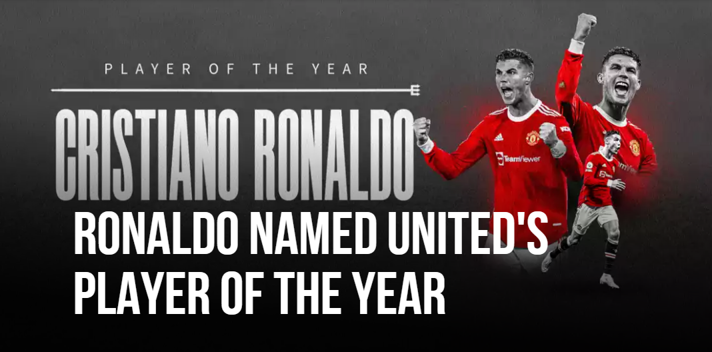

[공홈] 크리스티아누 호날두, 2021/22 맨체스터 유나이티드 올해의 맷 버스비 경 선수상 수상

크리스티아누 호날두가 맨체스터 유나이티드로 복귀한 첫 번째 시즌만에 맷 버스비 경 올해의 선수상의 주인공이 되었다.
호날두는 2003/04, 2006/07, 2007/08 시즌에도 올해의 선수상을 수상한 바 있다. 올드 트래포드로의 인상적인 복귀 후에, 팬들은 호날두가 이 트로피를 수상할 수 있도록 투표했다. 이번 올해의 선수상은 호날두의 네 번째 수상 기록이며, 최다 수상 기록과 동률을 이루었다.